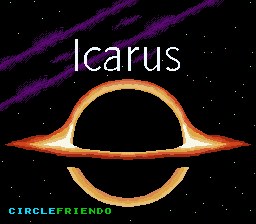
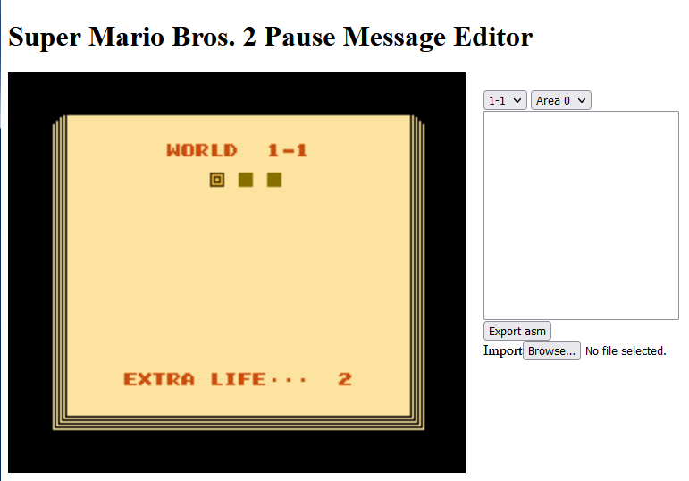
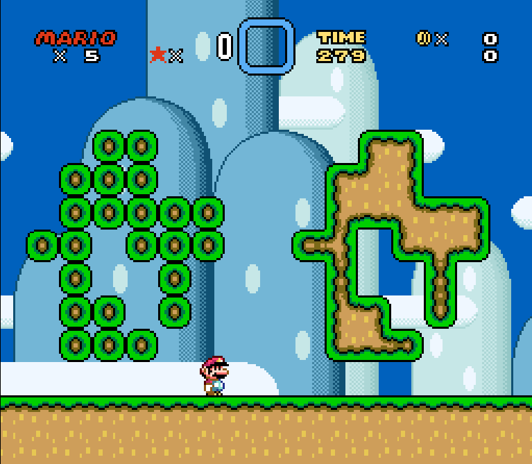

Games:
Seasons Change

Seasons Change is a short demo I made to learn the Godot Engine. It's a simple platforming game about exploring a landscape while altering the seasons.
Seasons Change DemoMario & Friends in: The Ghost's Gallery

Mario & Friends in: The Ghost's Gallery is a Super Mario World mod created for SMW Central's HackJam game jam. I worked with sio_kedelic and HamOfJustice during the seven-week event.
Mario & Friends in: The Ghost's GalleryYouTube Playlist
Icarus
Icarus is a Super Mario World mod featuring precision platforming.
IcarusGlitchCat7's Playthrough
Tools:
Super Mario Bros. 2 Pause Message Editor
This Pause Message Editor allows a mod author to add messages to the pause screens in Super Mario Bros. 2. This allows the author to include useful hints and tips catered to individual areas of the game.
SMB2 Pause Message EditorSuper Mario World Autotile
This autotile utility will automatically merge tiles with the correct edges. It saves the author a lot of tedious placing of individual tiles.
SMW AutotileResources:
Super Mario World Resources
Custom resources for Super Mario World mods I have created include:
- Music Arrangement
- Sprites
- Status Bar